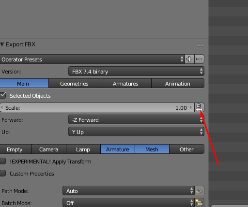
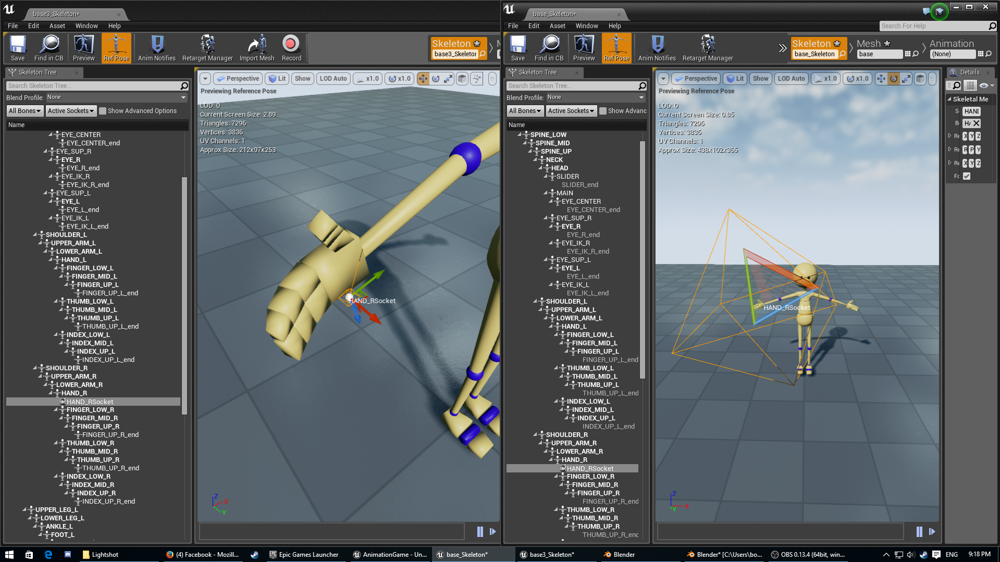
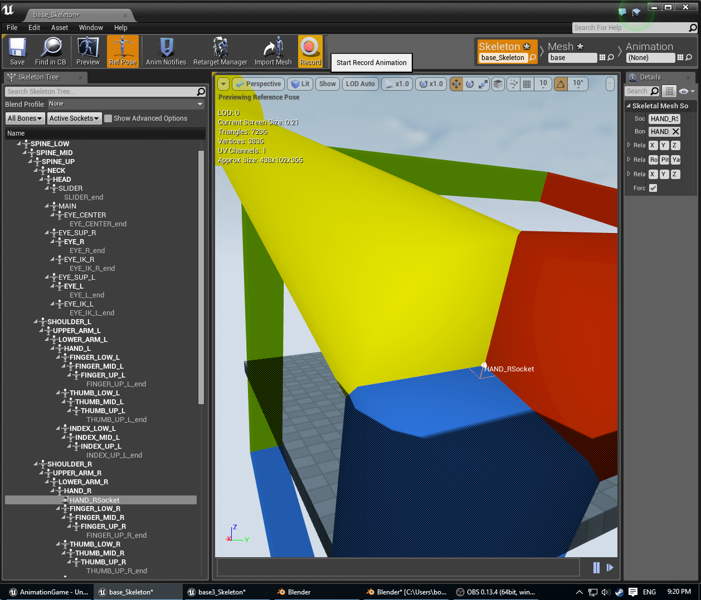

Blender
Contents
Overview
Blender is a digital content creation tool that works with Unreal Engine.
It allows the creation of 3D assets that can be used for games and film.
Similar software includes 3D Studio Max and Maya.
Blender is Open Source software and can be downloaded for free.
Blender facilitates the creation of statics and skeletal meshes.
This article was born as a discussion for general guidelines you should have when using Blender and UE4. The original discussion started here: https://forums.unrealengine.com/showthread.php?1298-Static-Mesh-from-Blender-to-UE4/page2
The purpose of this article is serving as a light guide of considerations when working with Blender and UE4 for people who are already comfortable with general 3D concepts (Modeling, Texturing, UVs), At the time of writing this, I found two relevant articles with more in-depth content:
- Static Mesh from Blender
- Creating a_Skeletal Mesh in Blender
- Workflow: MakeHuman and Blender
- Character from Blender to UE4
In the future this article may include a broader take in the Blender to UE4 pipeline, and the current content would be moved to a "Blender Considerations" article.
General Pointers
This is a plain copy/paste of some tips from Creating a Skeletal Mesh in Blender with some commentary for the last release of Blender
- Use the Scene Property tab, set your Units to Metric and Scale to 0.01. This will better match Blender Units to Unreal Units.
(Although this is no longer necessary for some of the last releases of blender, it will make your life easier, because the export scaling in blender still has some issues. More info below.)
- Add a 2nd UV map to your model to serve as lightmap UVs in Unreal. Make sure UVs don’t overlap in the 2nd UV map. (They can overlap in your 1st UV map just fine.)
- You should have a single armature in your FBX that parents your mesh
- The armature should have one root bone from which all other bones are hierarchically connected
- You can use the Action Editor to organize multiple animations in one project
- You can use the F button to Force a reference to exist on an action in the Action Editor so it doesn’t disappear when closing your Blender project
- When exporting your FBX, select Armature & Mesh and deselect the “Include Default Take” option
- When importing the FBX, you import into Unreal twice. First, you import the skeleton. Next, you import the animations and apply them to the skeleton you created.
Skeletal Meshes
Creating the skeletal mesh
Blender uses Y- for forward but UE4 uses X+ for forward. The FBX export options seem to do nothing, so you may want to model from blender using X+ forward or rotate the meshes in unreal 90 degrees when importing. Just try it and find what makes you comfortable.
As said earlier, the last release of Blender includes an option that upscales everything 100x to be compatible with FBX spec and UE4. This option currently has some bugs. I'd suggest to turn it off from the export panel (see image below) and set up the scene as mentioned earlier.

The previous suggestion is because the exporter still exports some wrong scale values, and when importing the skeletal mesh in UE4 the automatically generated PhysicsAsset will have bad info, and when creating sockets in the Skeleton Editor there are some issues, sockets appear scaled 100x and when using local translation in the editor the gizmo shows 100x the size, although it is not that bad, is a thing you can easily avoid by using the 0.01 scale tweak, see the screenshot below for comparison:

Look at the socket size. In the image above the scale gizmo is not affected, but setting the translate gizmo shows a big big gizmo:

The third issue I had was trying to get root motion to work. It didn't work at first because of the way maya/fbx works, browsing reddit and the blender issue tracker I found
https://developer.blender.org/T45368
and
https://www.reddit.com/r/unrealengine/comments/3q75xg/blender_276_root_motion/
It says that maya/fbx don't have the concept of Armature that blender has, there are just bones that are children of other bones and there is a root bone (I'm not really sure about this, I don't use maya) so when you animate a root bone in blender, you won't get root motion in unreal because the FBX exporter adds a root bone that has the transform of the armature object in blender. This is not a bug in any way but is something you should be aware when doing animations. If you want to have root motion you need to animate the armature, not the root bone.
Conclusion
Hope this helps you with the most common issues in Blender, If you have something to add please edit this page and add any information that you find useful.
-BoteRock